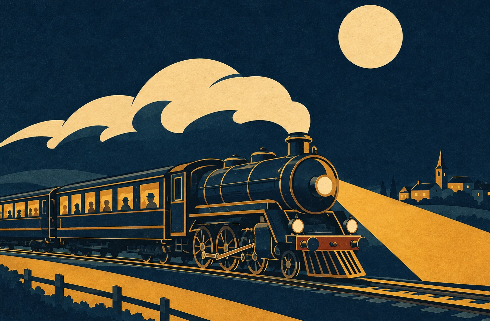

Wagons-Lits1ʳᵉ classe

Étape 2La campagne
Le Hibou
Hortense Lafleur, institutrice à la retraite, traque un voleur de bijoux de l’Express de minuit jusqu’au casino de Monte-Carlo.
Commencer l’enquête42 épisodes
DossierAffaire libre
Étape 3Pour continuer
Parties rapides
Une énigme toujours nouvelle, à la difficulté de votre choix.
Ouvrir un dossier3 niveaux
Campagne 2Bientôt
En cours d’écriture
La suite
La Dernière Vente
La Comtesse est derrière les barreaux, mais les Larmes de Lune n’ont pas fini de faire des victimes. De Paris à Venise, Hortense reprend la route, et chaque chapitre cache une règle nouvelle.
Après la campagne 158 épisodes